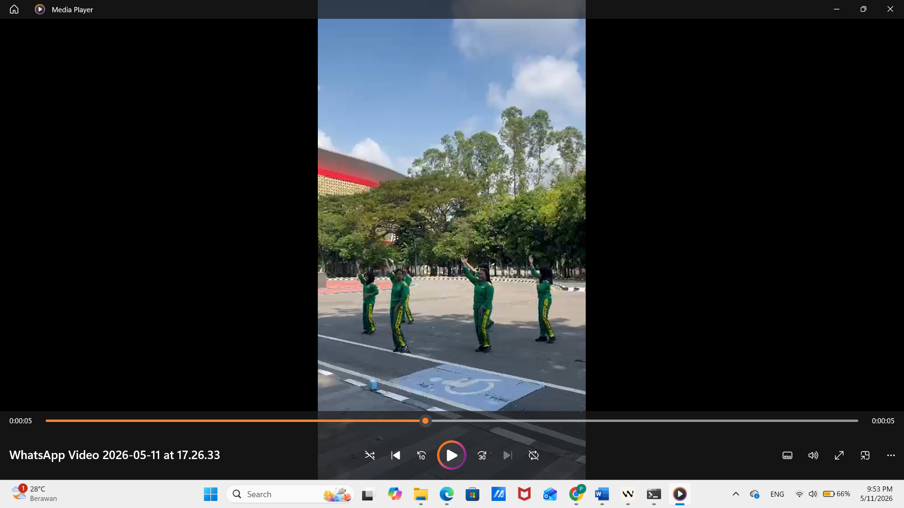
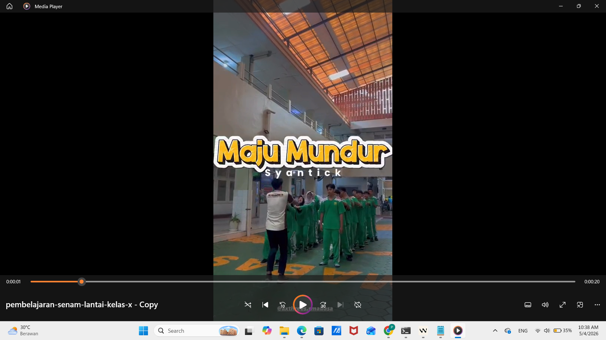

Artefak
Video Pembelajaran Penjas
Dokumentasi rekaman video praktik mengajar pendidikan jasmani beresolusi tinggi yang tersimpan di Google Drive.
Video berkapasitas besar di-host di Google Drive agar pemutaran lancar tanpa buffer.

G-Drive HDPraktik Mengajar 1
Dokumentasi video rekaman kegiatan praktik mengajar pendidikan jasmani bersama peserta didik.

G-Drive HDPraktik Mengajar 2
Dokumentasi video rekaman kegiatan praktik mengajar pendidikan jasmani bersama peserta didik.
Foto Pembelajaran Penjas
Dokumentasi foto kegiatan mengajar dan aktivitas pembelajaran pendidikan jasmani selama pelaksanaan PPL.
Dokumentasi foto kegiatan praktik pembelajaran (PPL) resolusi tinggi. Klik foto untuk tampilan penuh.
Foto Praktik Mengajar 1
Siklus 1


Foto Praktik Mengajar 2
Siklus 2